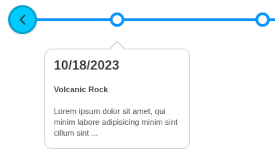

Quick Start
Learn how to get started quickly. Copy/Paste code snippets you can use to build your own custom timelines.
Inline Data Attributes

Learn how to use inline data attributes on the parent HTML element to customize the functionality and appearance of your timeline.
JSON Config Files

Learn how to create timelines using external JSON configuration files to store your data instead of using inline HTML attributes. There are many advantages to using this method.
JSON Timestamps

How you write dates in your JSON config file is important. Learn how to generate JSON timestamps correctly using the ISO 8601 date format.


Using jQuery

Learn how to use Jquery to initialize your timeline. (This method assumes you have the jQuery library loaded)
Advanced Usage

Use a combination of methods and Javascript to generate timelines. Requires knowledge of Javascript!
SwiperJS Add-On
Learn how to include SwiperJS as an add-on which works with Vanilla Timeline on touch screen devices.